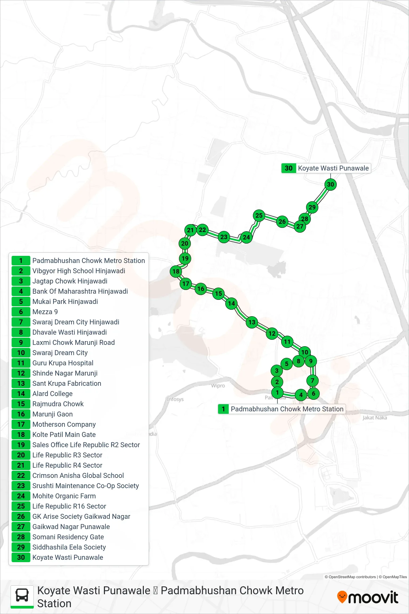

Pune Metro Feeder Bus Service: Full Route from Koyate Wasti, Punawale to Padmabhushan Chowk Metro Station

Commuters travelling from Punawale and nearby areas will have another public transport option with the introduction of Metro feeder bus services connecting residential localities to Pune Metro stations.
With the Pink Line (Line 3) of the Pune Metro becoming operational in phases, feeder bus services connecting LR-R3 and other sectors have started, aiming to improve last-mile connectivity for passengers travelling to and from the metro network.
One of these services is Metro Shuttle 45, which connects Koyate Wasti in Punawale to Padmabhushan Chowk Metro Station. The service is expected to benefit residents of Punawale and surrounding areas by providing a convenient connection to the Pune Metro.
Metro Shuttle 45: Route Overview
- Bus Route: Koyate Wasti, Punawale – Padmabhushan Chowk Metro Station
- Bus Service: Metro Shuttle 45
- Operating Days: Monday to Sunday
- Service Hours: 6:35 AM to 9:35 PM
- Expected Frequency: Every 25–30 minutes
The feeder service is intended to make metro travel more accessible for commuters living in Punawale and nearby residential areas.
Metro Shuttle 45 Bus Timings
According to the currently available schedule information, Metro Shuttle 45 is expected to operate every day of the week.
| Day | Operating Hours | Frequency |
|---|---|---|
| Monday | 6:35 AM – 9:35 PM | 25–30 minutes |
| Tuesday | 6:35 AM – 9:35 PM | 25–30 minutes |
| Wednesday | 6:35 AM – 9:35 PM | 25–30 minutes |
| Thursday | 6:35 AM – 9:35 PM | 25–30 minutes |
| Friday | 6:35 AM – 9:35 PM | 25–30 minutes |
| Saturday | 6:35 AM – 9:35 PM | 25–30 minutes |
| Sunday | 6:35 AM – 9:35 PM | 25–30 minutes |
Buses are expected to run at intervals of approximately 25 to 30 minutes during the scheduled operating hours.
Full Route Map and Bus Stops
Commuters can check the complete Metro Shuttle 45 route map, including the bus route and stops between Koyate Wasti, Punawale and Padmabhushan Chowk Metro Station, through the Moovit public transport platform.
View the route map and additional details:
Better Metro Connectivity for Punawale Residents
The introduction of feeder bus connectivity is expected to make daily commuting easier for residents of Punawale and nearby localities. By connecting residential areas with metro stations, these services can help commuters reduce their dependence on private vehicles and improve access to public transport.
As Pune's metro network expands, feeder services are expected to play an important role in strengthening last-mile connectivity and encouraging more people to use public transportation.
← Back to Archive